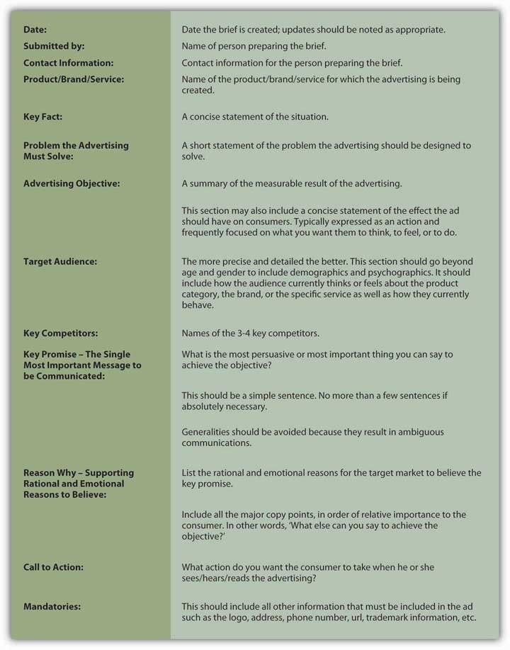
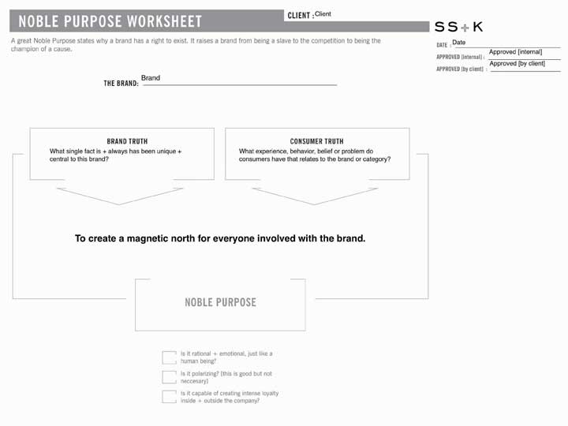
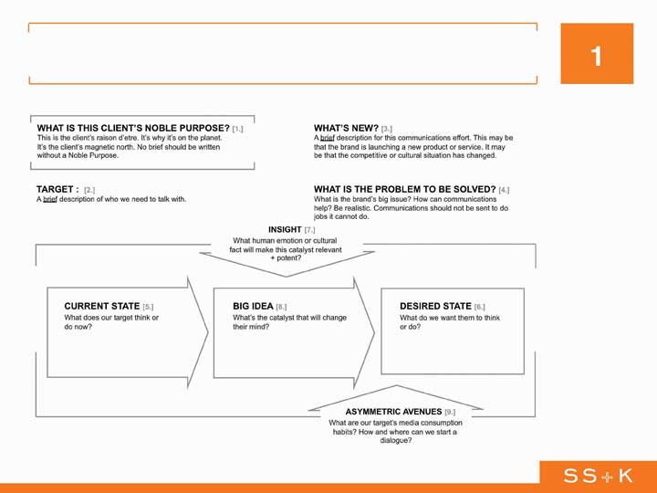
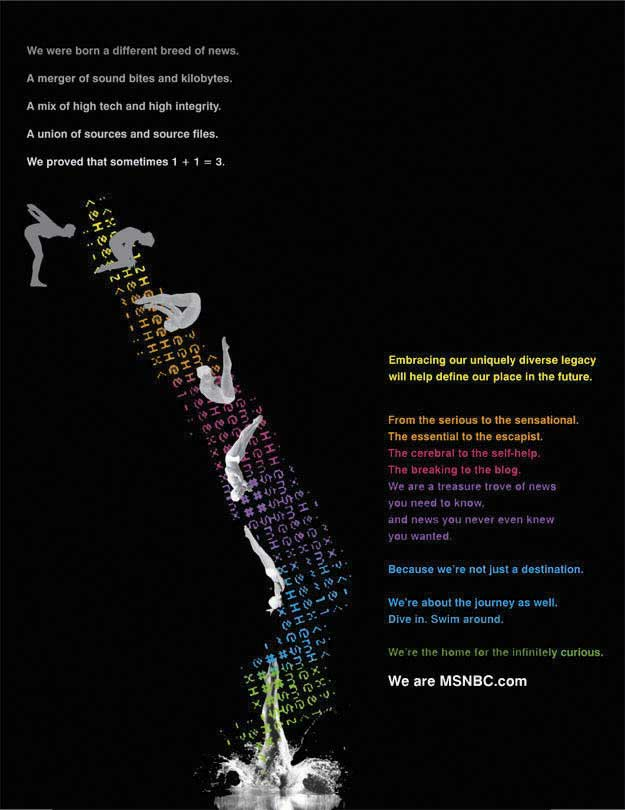

After studying this section, students should be able to do the following:
How do you communicate your strategy to your creative team?
The fruits of your labor are now turning into a real plan and a real document. After learning about the Four Ps and branding, and after identifying your current positioning and more desired positioning, you are ready to put words and actions into motion.
In this final section of this chapter, you will learn about SS+K’s and msnbc.com’s official plan: the creative brief. Preparing a creative brief is a collaborative process between the client (msnbc.com) and the agency (SS+K). Of course, a creative brief is never truly finalized; it is a living document that needs to be constantly reexamined for overall market appropriateness.
The creative briefDocument that outlines the information and objectives to inspire the creative idea, including what the advertising is trying to achieve, the main idea to be communicated, and the target audience. is a document that outlines the information and objectives to inspire the creative idea. Creative briefs may take different forms and include a variety of elements, including describing what the advertising is trying to achieve, identifying the main idea to be communicated, and outlining the target audience for that idea.
The Creative Brief
(click to see video)This video shows how a creative brief is used within an agency.
Proposing the Big Idea requires client agreement that the idea is right. Thus, both the advertising agency and the client must agree upon the final brief. The best briefs are written by account planners collaboratively with input from the client, account team, and creative director. One of the key functions of the SS+K brief is to come up with a single essential thought that summarizes the idea that will convince consumers to do what it is that the communication aims to do. Every agency has a proprietary brief template it uses to spell out the types of content it will need to include, such as specifying the audience, the product features, media placement ideas, and key point.
Figure 8.5 Anatomy of a Creative Brief
Briefs provide a foundation that allows all decision makers to provide initial input and subsequently gauge how well the chosen communication ideas, from advertising to media and PR, stay true to the strategic plan. In this way, clients rely on creative briefs as much as copywriters and art directors do.
SS+K uses only one brief, and the creative director has input on that brief. Other agencies may use different briefs for different purposes depending on the needs of the client. For example, a retailer may have a brief for its national campaign, and other briefs for local ads that may have different emphases. It is important to remember that there is no standard brief across the advertising industry, but most of the information found on briefs is fairly similar.
The first step in the SS+K brief is to use consumer and brand truths to establish the client’s noble purpose. The noble purposeExpression of the brand’s “true north,” its reason for being; a single-minded, concise statement, written to excite the imagination. expresses the brand’s “true north,” its reason for being on the earth. It is single-minded, concise, and written in such a way as to excite the imagination of the reader.
Marty Cooke is a partner and chief creative officer of New York–based SS+K. When he joined the agency, he’d already had substantial creative experience in some of the most influential advertising agencies in the world. He brought with him a defining vision for how creative solutions would be different at SS+K.
Marty Cooke
(click to see video)Marty Cooke describes the importance and elements of the noble purpose.
Figure 8.6 Noble Purpose Worksheet
The noble purpose worksheet is the first step in synthesizing the client’s purpose for existing.
Figure 8.7 The Communications Brief
Once SS+K identifies the noble purpose, the agency develops what it calls an “asymmetric communications briefDocument summarizing the consumer’s current state and what the agency needs to do to show how the product or service will improve upon this state..” This document summarizes the consumer’s current state and spells out what the agency needs to do to show him or her how the client’s product or service will improve upon this state.
Catherine Captain
(click to see video)Catherine Captain recalls the process of refining the brief from the client’s perspective.
Michelle Rowley
(click to see video)Michelle Rowley explains the full msnbc.com brief from Consumer Truth to Big Idea.
The manifesto: “Catching lightning in a bottle.”
Agency creative teams typically develop creative executions immediately after receiving the brief. SS+K, however, takes an interim step between the development of the brief and the execution of the campaign. SS+K copywriter Sam Mazur was asked to capture the essence of the branding in a conceptual piece of work that is not an advertisement. This is a tricky proposition. If it is effective, the manifesto is a useful tool for explaining the thinking of the marketing team. On the other hand, if the piece generates too much enthusiasm, the agency may find itself in the position of trying to explain the difference between an expression of the brand and an advertisement for the brand.
Russell Stevens
(click to see video)Russell Stevens discusses the articulation of the brief with creative contribution and the manifesto video interview.
Figure 8.8
The Manifesto. The communications brief in turn inspires what SS+K calls its “brand manifestoBoth a written and a visual statement used to help internal and external audiences understand what the brand stands for; it is not a marketing campaign or a reflection of the final advertising material..” It is often both a written and a visual statement used to help internal and external audiences understand what the brand stands for. It is not a marketing campaign or a reflection of what the final advertising material will look like.
Sam Mazur and Amit Nizan discuss the creation of the manifesto.
Catherine Captain
(click to see video)Catherine Captain discusses the internal reaction to the manifesto.
This section described how to devise a creative brief that more fully describes the intricacies of the proposed advertising strategies and how the creative team can implement those strategies.